library(tidyverse)
library(moderndive)
library(infer)12 회귀 분석을 위한 추론
이 책의 끝에서 두 번째 장에서는 챕터 @ref(regression)와 @ref(multiple-regression)에서 처음 공부했던 회귀 모델을 다시 살펴보겠습니다. 챕터 @ref(confidence-intervals)와 @ref(hypothesis-testing)에서 배운 신뢰 구간과 가설 검정에 대한 지식을 바탕으로, 결과 변수와 설명 변수 사이의 관계를 더 깊이 이해하기 위해 통계적 추론을 적용할 수 있게 될 것입니다.
필요한 패키지
이 장에 필요한 모든 패키지를 불러오겠습니다(이미 설치되어 있다고 가정합니다). 섹션 @ref(tidyverse-package)에서 논의했듯이, library(tidyverse)를 실행하여 tidyverse 패키지를 불러오면 다음과 같이 일반적으로 사용되는 데이터 과학 패키지들을 한 번에 불러올 수 있습니다.
- 데이터 시각화를 위한
ggplot2 - 데이터 전처리를 위한
dplyr - 데이터를 “깔끔한(tidy)” 형식으로 변환하기 위한
tidyr - 스프레드시트 데이터를 R로 가져오기 위한
readr - 그뿐만 아니라 더 고급 패키지인
purrr,tibble,stringr,forcats패키지들까지
필요한 경우, R 패키지 설치 및 로드 방법에 대한 정보는 섹션 @ref(packages)를 참조하십시오.
12.1 회귀 분석 복습
회귀 분석을 위한 추론으로 넘어가기 전에, 섹션 @ref(model1)에서 다루었던 텍사스 대학교 오스틴(University of Texas Austin)의 강의 평가 분석을 다시 떠올려 봅시다.
12.1.1 강의 평가 분석
단순 선형 회귀 를 사용하여 우리는 다음 두 변수 사이의 관계를 모델링했습니다.
- 수치형 결과 변수 \(y\) (강사의 강의 점수)
- 단일 수치형 설명 변수 \(x\) (강사의 “외모” 점수)
우리는 먼저 moderndive 패키지에 포함된 evals 데이터 프레임에서 변수들의 하위 집합을 선택하여 evals_ch5 데이터 프레임을 만들었습니다. 이 evals_ch5 데이터 프레임에는 분석에 필요한 변수들, 특히 강사의 강의 점수(score)와 외모 평점(bty_avg)만 포함되어 있습니다.
evals_ch5 <- evals %>%
select(ID, score, bty_avg, age)
glimpse(evals_ch5)Rows: 463
Columns: 4
$ ID <int> 1, 2, 3, 4, 5, 6, 7, 8, 9, 10, 11, 12, 13, 14, 15, 16, 17, 18,…
$ score <dbl> 4.7, 4.1, 3.9, 4.8, 4.6, 4.3, 2.8, 4.1, 3.4, 4.5, 3.8, 4.5, 4.…
$ bty_avg <dbl> 5.00, 5.00, 5.00, 5.00, 3.00, 3.00, 3.00, 3.33, 3.33, 3.17, 3.…
$ age <int> 36, 36, 36, 36, 59, 59, 59, 51, 51, 40, 40, 40, 40, 40, 40, 40…하위 섹션 @ref(model1EDA)에서 우리는 score와 bty_avg 사이의 관계에 대한 탐색적 데이터 분석을 수행했습니다. 그곳에서 우리는 두 변수 사이에 0.187의 약한 양의 상관관계가 존재함을 확인했습니다.
이는 score와 bty_avg 사이의 선형 관계를 요약하는 “최적적합(best-fitting)” 회귀선이 포함된 그림 @ref(fig:regline)의 산점도에서 입증되었습니다. 하위 섹션 @ref(leastsquares)에서 우리가 “최적적합” 선을 잔차 제곱합(sum of squared residuals)을 최소화하는 선으로 정의했음을 상기하십시오.
ggplot(evals_ch5,
aes(x = bty_avg, y = score)) +
geom_point() +
labs(x = "외모 점수",
y = "강의 점수",
title = "강의 점수와 외모 점수 사이의 관계") +
geom_smooth(method = "lm", se = FALSE)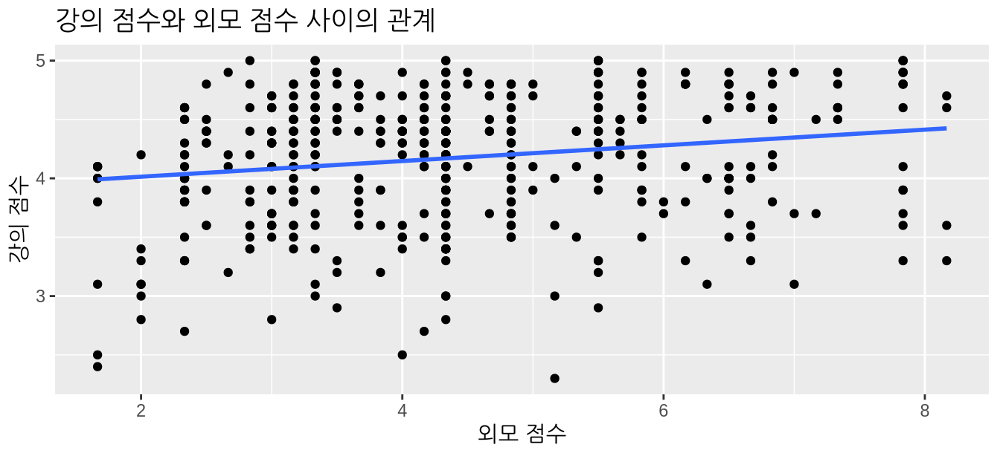
이 그래프를 다시 보면서 여러분은 “그 선의 기울기가 정말 그렇게 양수인가?”라고 물을 수도 있습니다. bty_avg 변수가 증가함에 따라 왼쪽에서 오른쪽으로 증가하기는 하지만, 얼마나 많이 증가할까요? 이 정보를 얻기 위해 우리가 다음의 2단계 절차를 따랐음을 상기하십시오.
- 먼저
lm()함수와 공식score ~ bty_avg를 사용하여 선형 회귀 모델을 “적합”시켰습니다. 이 모델을score_model에 저장했습니다. moderndive패키지의get_regression_table()함수를score_model에 적용하여 회귀 표를 얻었습니다.
# 회귀 모델 적합:
score_model <- lm(score ~ bty_avg, data = evals_ch5)
# 회귀 표 가져오기:
get_regression_table(score_model)| term | estimate | std_error | statistic | p_value | lower_ci | upper_ci |
|---|---|---|---|---|---|---|
| intercept | 3.880 | 0.076 | 50.96 | 0 | 3.731 | 4.030 |
| bty_avg | 0.067 | 0.016 | 4.09 | 0 | 0.035 | 0.099 |
표 @ref(tab:regtable-11)의 결과인 회귀 표의 estimate 열에 있는 값들을 사용하여, 우리는 그림 @ref(fig:regline)에 있는 “최적적합” 회귀선의 방정식을 얻을 수 있습니다.
\[ \begin{aligned} \widehat{y} &= b_0 + b_1 \cdot x\\ \widehat{\text{score}} &= b_0 + b_{\text{bty}\_\text{avg}} \cdot\text{bty}\_\text{avg}\\ &= 3.880 + 0.067\cdot\text{bty}\_\text{avg} \end{aligned} \]
여기서 \(b_0\)는 적합된 절편이고 \(b_1\)은 bty_avg에 대한 적합된 기울기입니다. 적합된 기울기 값 \(b_1\) = 0.067에 대한 해석을 상기해 보십시오.
“외모” 평점이 1단위 증가할 때마다, 강의 평가 점수는 평균적으로 0.067단위씩 증가하는 경향이 있습니다.
따라서 기울기 값은 \(y\) 변수인 score와 \(x\) 변수인 bty_avg 사이의 관계를 정량화합니다. 우리는 또한 \(b_0\) = 3.88인 절편 값에 대해서도 논의했는데, 가능한 “외모” 점수의 범위가 0을 포함하지 않기 때문에 실질적인 해석의 여지는 없었습니다.
12.1.2 표집 시나리오
이제 하위 섹션 @ref(terminology-and-notation)에서 공부했던 표집과 관련된 용어 및 표기법의 관점에서 이 연구를 다시 살펴보겠습니다.
먼저, 이 463개 강의의 강사들을 더 큰 연구 모집단(study population)에서 추출한 대표 표본(representative sample)으로 간주해 봅시다. 우리의 경우, 연구 모집단은 UT 오스틴의 모든 강사이며, 이 463개 강의를 가르친 강사들의 표본이 대표 표본이라고 가정하겠습니다. 안타깝게도 연구자들이 사용한 표집 방법론(sampling methodology)에 대해 더 자세히 알지 못한다면, 우리는 단지 이 두 가지 사실을 가정할 수 있을 뿐입니다.
우리는 이 \(n\) = 463개의 강의를 하나의 표본으로 보고 있으므로, 우리가 구한 적합된 기울기 \(b_1\) = 0.067을 모집단 기울기(population slope) \(\beta_1\)의 점 추정치(point estimate)로 볼 수 있습니다. 즉, \(\beta_1\)은 UT 오스틴의 모든 강사에 대해 강의 점수(score)와 외모 평점(bty_avg) 사이의 관계를 정량화합니다. 마찬가지로 적합된 절편 \(b_0\) = 3.88을 UT 오스틴의 모든 강사에 대한 모집단 절편(population intercept) \(\beta_0\)의 점 추정치로 볼 수 있습니다.
이 두 아이디어를 종합하면, 적합된 선의 방정식 \(\widehat{y}\) = \(b_0 + b_1 \cdot x\) = \(3.880 + 0.067 \cdot \text{bty}\_\text{avg}\)를 실재하지만 알 수 없는 어떤 모집단 선(population line) \(y = \beta_0 + \beta_1 \cdot x\)의 추정치로 볼 수 있습니다. 따라서 우리는 강의 평가 분석과 그동안 보았던 모든 표집 시나리오 사이의 공통점을 찾을 수 있습니다. 이 장에서는 표 @ref(tab:summarytable-ch11)에 표시된 회귀 기울기의 마지막 시나리오에 초점을 맞출 것입니다.
| Scenario | Population parameter | Notation | Point estimate | Symbol(s) |
|---|---|---|---|---|
| 1 | Population proportion | $p$ | Sample proportion | $\widehat{p}$ |
| 2 | Population mean | $\mu$ | Sample mean | $\overline{x}$ or $\widehat{\mu}$ |
| 3 | Difference in population proportions | $p_1 - p_2$ | Difference in sample proportions | $\widehat{p}_1 - \widehat{p}_2$ |
| 4 | Difference in population means | $\mu_1 - \mu_2$ | Difference in sample means | $\overline{x}_1 - \overline{x}_2$ or $\widehat{\mu}_1 - \widehat{\mu}_2$ |
| 5 | Population regression slope | $\beta_1$ | Fitted regression slope | $b_1$ or $\widehat{\beta}_1$ |
이제 적합된 기울기 \(b_1\)과 적합된 절편 \(b_0\)를 표본에 기반한 점 추정치로 보고 있으므로, 이러한 추정치들 역시 표집 가변성(sampling variability)의 영향을 받게 됩니다. 다시 말해, 다른 \(n\) = 463개 강의와 강사들에 대한 새로운 데이터를 수집한다면, 새로운 적합된 기울기 \(b_1\)은 0.067과 다를 가능성이 높습니다. 새로운 적합된 절편 \(b_0\)도 마찬가지일 것입니다. 그런데 이 추정치들이 얼마나 많이 변할까요(vary)? 이 정보는 표 @ref(tab:regtable-11)의 회귀 표에 있는 나머지 열들에 들어 있습니다. 챕터 @ref(sampling)의 표집, 챕터 @ref(confidence-intervals)의 신뢰 구간, 챕터 @ref(hypothesis-testing)의 가설 검정에 대한 지식이 이 나머지 열들을 해석하는 데 도움이 될 것입니다.
12.2 회귀 표 해석하기
우리는 지금까지 표 @ref(tab:regtable-11)의 회귀 표에서 왼쪽의 두 열인 term과 estimate에만 집중했습니다. 이제 표 @ref(tab:score-model-part-deux)에서 나머지 열들인 std_error, statistic, p_value, lower_ci, upper_ci로 관심을 돌려보겠습니다.
| term | estimate | std_error | statistic | p_value | lower_ci | upper_ci |
|---|---|---|---|---|---|---|
| intercept | 3.880 | 0.076 | 50.96 | 0 | 3.731 | 4.030 |
| bty_avg | 0.067 | 0.016 | 4.09 | 0 | 0.035 | 0.099 |
적합된 절편 \(b_0\)에 대한 실질적인 해석이 부족하다는 점을 고려하여, 이 섹션에서는 적합된 기울기 \(b_1\)에 해당하는 표의 두 번째 행에만 집중하겠습니다. 먼저 std_error, statistic, p_value, lower_ci, upper_ci 열들을 해석해 보겠습니다. 그 후 다가올 하위 섹션 @ref(regression-table-computation)에서 R이 이러한 값들을 어떻게 계산하는지 논의할 것입니다.
12.2.1 표준 오차
표 @ref(tab:regtable-11)에 있는 회귀 표의 세 번째 열인 std_error는 우리 추정치의 표준 오차(standard error)에 해당합니다. 하위 섹션 @ref(sampling-definitions)에서 보았던 표준 오차 의 정의를 상기해 봅시다.
표준 오차는 표본으로부터 계산된 모든 점 추정치의 표준 편차입니다.
그렇다면 이것이 적합된 기울기 \(b_1\) = 0.067의 관점에서는 무엇을 의미할까요? 이 값은 강의 점수와 외모 점수가 쌍으로 이루어진 \(n\) = 463개의 특정한 표본으로부터 얻은 적합된 기울기의 단 하나의 가능한 값일 뿐입니다. 그러나 만약 우리가 강의 점수와 외모 점수가 쌍으로 이루어진 다른 \(n\) = 463개의 표본을 수집한다면, 우리는 거의 확실히 다른 적합된 기울기 \(b_1\)을 얻게 될 것입니다. 이는 표집 가변성 때문입니다.
우리가 가상으로 강의 점수와 외모 점수 쌍으로 이루어진 그러한 표본을 1000개 수집하여, 거기서 얻은 1000개의 적합된 기울기 \(b_1\) 값을 계산하고 이를 히스토그램으로 시각화했다고 가정해 봅시다. 이것은 하위 섹션 @ref(sampling-definitions)에서 정의한 \(b_1\)의 표집 분포(sampling distribution)를 시각화한 것이 될 것입니다. 또한 \(b_1\)의 표집 분포의 표준 편차에 표준 오차라는 특별한 이름이 붙는다는 점을 다시 떠올려 보십시오.
그림 @ref(fig:comparing-sampling-distributions)에서 삽의 크기가 25, 50, 100일 때 표본 비율 \(\widehat{p}\)에 대해 세 개의 표집 분포를 구축했던 것을 상기해 보십시오. 우리는 표본 크기가 커짐에 따라 표집 분포가 좁아지는 것으로부터 알 수 있듯이 표준 오차가 감소하는 것을 관찰했습니다.
\(b_1\)의 표준 오차도 마찬가지로 서로 다른 표본들 사이에서 적합된 기울기 \(b_1\)의 변동이 얼마나 될 것으로 예상되는지를 정량화합니다. 따라서 우리의 경우, bty_avg 기울기 변수에서 약 0.016 단위의 변동을 예상할 수 있습니다. estimate와 std_error 값은 모든 강사와 관련된 알 수 없는 모집단 기울기 \(\beta_1\)의 값을 추론(inferring)하는 데 핵심적인 역할을 한다는 점을 기억하십시오.
섹션 @ref(infer-regression)에서는 infer 패키지를 사용하여 시뮬레이션을 수행하고, 이 사례에서 \(b_1\)에 대한 부트스트랩 분포를 구축할 것입니다. 하위 섹션 @ref(bootstrap-vs-sampling)에서 보았듯이, 부트스트랩 분포는 모양이 비슷하다는 점에서 표집 분포에 대한 근사치입니다. 모양이 비슷하기 때문에 표준 오차도 비슷합니다. 하지만 표집 분포와 달리 부트스트랩 분포는 단 하나의 표본으로부터 구축되며, 이는 실제 생활에서 이루어지는 방식과 더 일치합니다.
12.2.2 검정 통계량
표 @ref(tab:regtable-11)의 회귀 표에서 네 번째 열인 statistic은 다음 가설 검정과 관련된 검정 통계량에 해당합니다.
\[ \begin{aligned} H_0 &: \beta_1 = 0\\ \text{대 } H_A&: \beta_1 \neq 0 \end{aligned} \]
섹션 @ref(understanding-ht)에서 소개한 가설 검정과 관련된 용어, 표기법, 정의를 상기해 봅시다.
가설 검정은 서로 경쟁하는 두 가설 사이의 검정으로 구성됩니다. (1) 귀무 가설 \(H_0\) 대 (2) 대립 가설 \(H_A\)입니다.
검정 통계량은 가설 검정에 사용되는 점 추정치/표본 통계량 공식입니다.
여기서 우리의 귀무 가설 \(H_0\)는 모집단 기울기 \(\beta_1\)이 0이라고 가정합니다. 만약 모집단 기울기 \(\beta_1\)이 정말로 0이라면, 이는 우리 모집단의 모든 강사에 대해 강의 점수와 외모 점수 사이에 어떠한 실제적인 관계도 없음을 말하는 것입니다. 즉, \(x\) = “외모” 점수가 \(y\) = “강의 점수”에 아무런 영향을 미치지 않는다는 뜻입니다. 반면에 대립 가설 \(H_A\)는 모집단 기울기 \(\beta_1\)이 0이 아니라고 가정하며, 이는 양수일 수도 있고 음수일 수도 있음을 의미합니다. 이는 강의 점수와 외모 점수 사이에 양(+)의 관계나 음(-)의 관계가 있음을 시사합니다. 우리는 이러한 대립 가설을 양측(two-sided) 가설이라고 불렀던 것을 기억하십시오. 관례적으로 회귀 분석을 위한 모든 가설 검정은 양측 대립 가설을 가정합니다.
섹션 @ref(ht-activity)의 promotions 활동에서 우리가 가정했던 성차별이 없는 “가상 세계(hypothesized universe)”를 떠올려 보십시오. 마찬가지로 여기서 이 가설 검정을 수행할 때, 우리는 강의 점수와 외모 점수 사이에 아무런 관계가 없는 “가상 세계”를 가정할 것입니다. 즉, 귀무 가설 \(H_0: \beta_1 = 0\)이 참이라고 가정할 것입니다.
하지만 회귀 표의 statistic 열은 조금 까다롭습니다. 그것은 우리가 가설 검정을 위해 이론 기반 방법을 사용했던 하위 섹션 @ref(theory-hypo)에서 보았던 이표본 t-통계량과 매우 유사한 표준화된 t-검정 통계량에 해당합니다. 이 두 경우 모두 귀무 분포는 수학적으로 t-분포임이 증명될 수 있습니다. 이러한 검정 통계량은 통계적 추론을 처음 접하는 분들이 공부하기에 까다로울 수 있으므로, 일단 건너뛰고 p-값의 해석으로 넘어가겠습니다. 궁금하신 분들을 위해 하위 섹션 @ref(theory-regression)에 이 표준화된 t-검정 통계량에 대한 논의를 포함해 두었습니다.
12.2.3 p-값
표 @ref(tab:regtable-11)의 회귀 표에서 다섯 번째 열인 p_value는 가설 검정 \(H_0: \beta_1 = 0\) 대 \(H_A: \beta_1 \neq 0\)에 대한 p-값에 해당합니다.
다시 한번 섹션 @ref(understanding-ht)에서 소개한 가설 검정 관련 용어, 표기법, 정의를 상기하며 p-값의 정의에 집중해 봅시다.
p-값은 귀무 가설 \(H_0\)가 참이라고 가정할 때, 관찰된 검정 통계량만큼 극단적이거나 그보다 더 극단적인 검정 통계량을 얻을 확률입니다.
직관적으로 p-값이란, 강의 점수와 외모 점수 사이에 아무런 관계가 없는 “가상 세계”에서 관찰된 적합된 기울기 \(b_1\) = 0.067이 얼마나 “극단적인지”를 정량화하는 것으로 생각할 수 있습니다.
섹션 @ref(ht-interpretation)에서 설명한 가설 검정 절차를 따르면, 이 사례에서 p-값이 0이므로 유의 수준 \(\alpha\)를 어떻게 선택하든 \(H_0\)를 기각하고 \(H_A\)를 채택하게 됩니다. 비통계적인 용어로는 다음과 같습니다. “우리는 강의 점수와 외모 점수 사이에 관계가 없다는 가설을 기각하고, 관계가 있다는 가설을 채택한다.” 즉, 증거는 양(+)의 유의미한 관계가 있음을 시사합니다.
하지만 더 정확하게 말하자면, p-값은 관찰된 검정 통계량 4.09이 적절한 귀무 분포와 비교했을 때 얼마나 극단적인지에 해당합니다. 섹션 @ref(infer-regression)에서는 infer 패키지를 사용하여 이 사례에 대한 귀무 분포를 구축하는 시뮬레이션을 수행할 것입니다.
한 가지 추가로 주의할 점은, 이 가설 검정의 결과는 하위 섹션 @ref(regression-conditions)에서 곧 소개할 “회귀 추론을 위한 몇 가지 조건”이 충족될 때만 유효하다는 것입니다.
12.2.4 신뢰 구간
표 @ref(tab:regtable-11)의 회귀 표에서 가장 오른쪽에 있는 두 열(lower_ci와 upper_ci)은 모집단 기울기 \(\beta_1\)에 대한 95% 신뢰 구간의 끝점에 해당합니다. 섹션 @ref(ci-build-up)에서 보았던 “그물이 물고기라면 신뢰 구간은 모집단 매개변수”라는 비유를 상기해 보십시오. \(\beta_1\)에 대해 도출된 (0.035, 0.099)이라는 95% 신뢰 구간은 강의 점수와 외모 점수 사이의 선형 관계에 대한 모집단 기울기 \(\beta_1\)의 타당한 범위로 생각할 수 있습니다.
하위 섹션 @ref(shorthand)에서 소개한 신뢰 구간의 정밀한 해석과 요약된 해석 중, 이 신뢰 구간에 대한 통계적으로 정밀한 해석은 다음과 같습니다. “만약 우리가 이 표집 절차를 아주 많이 반복한다면, 우리는 결과로 얻은 신뢰 구간의 약 95%가 모집단 기울기 \(\beta_1\)의 값을 포함할 것으로 예상한다.” 하지만 우리는 이를 요약된 해석을 사용하여 “우리는 실제 모집단 기울기 \(\beta_1\)이 0.035과 0.099 사이에 있다고 95% ’확신’한다”라고 정리하겠습니다.
이 경우 \(\beta_1\)에 대한 95% 신뢰 구간 \((0.035, \, 0.099)\)이 아주 특별한 값인 \(\beta_1 = 0\)을 포함하지 않는다는 점에 주목하십시오. 모집단 회귀 기울기 \(\beta_1\)이 0이라는 것은 강의 점수와 외모 점수 사이에 아무런 관계가 없다는 것과 같다고 언급했음을 기억하십시오. \(\beta_1 = 0\)이 우리의 타당한 \(\beta_1\) 범위 내에 있지 않으므로, 우리는 실제로 강의 점수와 외모 점수 사이에 관계가 있으며 그 관계가 양(+)의 관계라고 믿게 됩니다. 따라서 이 경우 95% 신뢰 구간을 통한 모집단 기울기 \(\beta_1\)에 대한 결론은 가설 검정의 결론과 일치합니다. 즉, 증거는 강의 점수와 외모 점수 사이에 의미 있는 관계가 있음을 시사합니다.
하지만 하위 섹션 @ref(ci-width)에서 보았듯이, 신뢰 수준은 신뢰 구간의 너비를 결정하는 여러 요인 중 하나입니다. 예를 들어, 95% 대신 더 높은 99% 신뢰 수준을 사용했다고 가정해 봅시다. 그러면 \(\beta_1\)에 대한 신뢰 구간이 더 넓어지며 이제 0을 포함하게 될 수도 있습니다. 여기서 기억해야 할 교훈은 신뢰 구간에 기반한 어떤 결론이든 사용된 신뢰 수준에 크게 좌우된다는 것입니다.
\(\beta_1\)에 대한 95% 신뢰 구간의 두 끝점을 계산하는 데 어떤 계산이 들어갔을까요?
하위 섹션 @ref(theory-ci)에서 lower_ci와 upper_ci에 대해 논의했던 표집 그릇 예시를 상기해 보십시오. 표본 비율 \(\widehat{p}\)의 표집 분포와 부트스트랩 분포가 대략 정규 분포를 따랐기 때문에, 우리는 부록 @ref(appendix-normal-curve)에 있는 종 모양 분포에 대한 경험 법칙을 사용하여 다음 방정식을 통해 \(p\)에 대한 95% 신뢰 구간을 만들 수 있었습니다.
\[\widehat{p} \pm \text{MoE}_{\widehat{p}} = \widehat{p} \pm 1.96 \cdot \text{SE}_{\widehat{p}} = \widehat{p} \pm 1.96 \cdot \sqrt{\frac{\widehat{p}(1-\widehat{p})}{n}}\]
우리는 이를 표집 분포 및/또는 부트스트랩 분포가 대략적으로 종 모양을 띠는 다른 점 추정치들로 일반화할 수 있습니다.
\[\text{점 추정치} \pm \text{오차 한계(MoE)} = \text{점 추정치} \pm 1.96 \cdot \text{표준 오차(SE)}\]
섹션 @ref(infer-regression)에서 적합된 기울기 \(b_1\)의 표집/부트스트랩 분포 역시 실제로 종 모양임을 보여줄 것입니다. 따라서 우리는 다음 방정식을 사용하여 \(\beta_1\)에 대한 95% 신뢰 구간을 구축할 수 있습니다.
\[b_1 \pm \text{MoE}_{b_1} = b_1 \pm 1.96 \cdot \text{SE}_{b_1}\]
표준 오차 \(\text{SE}_{b_1}\)의 값은 얼마일까요? 그것은 표 @ref(tab:regtable-11)의 회귀 표 세 번째 열에 있는 0.016입니다. 따라서 다음과 같습니다.
\[ \begin{aligned} b_1 \pm 1.96 \cdot \text{SE}_{b_1} &= 0.067 \pm 1.96 \cdot 0.016 = 0.067 \pm 0.031\\ &= (0.036, 0.098) \end{aligned} \]
이는 표 @ref(tab:regtable-11)의 마지막 두 열에 있는 \((0.035, 0.099)\) 신뢰 구간과 매우 흡사합니다.
하지만 가설 검정과 마찬가지로, 이 신뢰 구간의 결과 역시 섹션 @ref(regression-conditions)에서 논의할 “회귀 추론을 위한 조건”이 충족될 때만 유효합니다.
12.2.5 R은 이 표를 어떻게 계산할까요?
우리는 표 @ref(tab:regtable-11)에서 표준 오차, 검정 통계량, p-값, 그리고 95% 신뢰 구간의 끝점 값을 얻기 위해 시뮬레이션을 수행하지 않았으므로, 이러한 값들이 어떻게 계산되었는지 궁금할 것입니다. R은 보이지 않는 곳에서 무엇을 했을까요? R은 우리가 신뢰 구간과 가설 검정을 다룬 챕터 @ref(confidence-intervals)와 @ref(hypothesis-testing)에서 infer 패키지를 사용해 했던 것처럼 시뮬레이션을 실행했을까요?
정답은 “아니오”입니다! 하위 섹션 @ref(theory-ci)에서 보았던 신뢰 구간 구축을 위한 이론 기반 방법과 하위 섹션 @ref(theory-hypo)에서 보았던 이론 기반 가설 검정과 마찬가지로, 회귀 추론을 위한 신뢰 구간을 구축하고 가설 검정을 수행할 수 있게 해주는 수학적 공식들이 존재합니다. 이러한 공식들은 컴퓨터가 존재하지 않던 시절에 도출되었으므로, 이 책에서 우리가 했던 광범위한 컴퓨터 시뮬레이션을 실행하는 것은 불가능했을 것입니다. 우리는 이러한 공식들을 하위 섹션 @ref(theory-regression)의 “회귀 분석을 위한 이론 기반 추론”에서 제시합니다.
섹션 @ref(infer-regression)에서는 infer 패키지를 사용하여 신뢰 구간을 구축하고 가설 검정을 수행하는 시뮬레이션 기반 접근 방식을 살펴볼 것입니다. 특히 적합된 기울기 \(b_1\)의 부트스트랩 분포가 보기에 정말 종 모양임을 확인시켜 드릴 것입니다.
12.3 회귀 추론을 위한 조건
하위 섹션 @ref(se-method)에서 우리는 부트스트랩 분포가 종 모양인 경우에만 신뢰 구간 구축을 위해 표준 오차 기반 방법을 사용할 수 있다고 언급했습니다. 마찬가지로, 섹션 @ref(regression-interp)에서 설명한 가설 검정과 신뢰 구간 결과가 유효한 의미를 갖기 위해 충족되어야 하는 몇 가지 조건이 있습니다. 이러한 조건들은 가정된 근간의 수학 및 확률 이론이 성립하기 위해 반드시 충족되어야 합니다.
회귀 추론을 위해서는 네 가지 조건을 충족해야 합니다. 다음 조건들의 첫 글자를 따서 LINE이라고 부릅니다. 이는 선형 회귀를 수행할 때마다 확인해야 할 사항들을 기억하는 데 도움이 됩니다.
- 변수 사이 관계의 선형성(Linearity)
- 잔차의 독립성(Independence)
- 잔차의 정규성(Normality)
- 잔차 분산의 등분산성(Equality of variance)
조건 L, N, E는 잔차 분석(residual analysis)이라 불리는 과정을 통해 검증할 수 있습니다. 조건 I는 데이터가 어떻게 수집되었는지에 대한 이해를 통해서만 검증할 수 있습니다.
이 섹션에서는 잔차에 대해 복습하고, 네 가지 LINE 조건이 각각 성립하는지 확인한 다음, 그 시사점에 대해 논의할 것입니다.
12.3.1 잔차 복습
하위 섹션 @ref(model1points)에서 정의한 잔차를 상기해 봅시다. 잔차는 관찰값(observed value)에서 적합값(fitted value)을 뺀 것으로, \(y - \widehat{y}\)로 표시합니다. 잔차는 그림 @ref(fig:regline)의 회귀선 위에 있는 관찰값 \(y\)와 적합값 \(\widehat{y}\) 사이의 오차 또는 “적합도 부족(lack-of-fit)”으로 생각할 수 있습니다. 그림 @ref(fig:residual-example)에서는 463개의 잔차 중 하나를 화살표로 예시하고, 그에 해당하는 관찰값과 적합값을 각각 원과 사각형으로 표시했습니다.
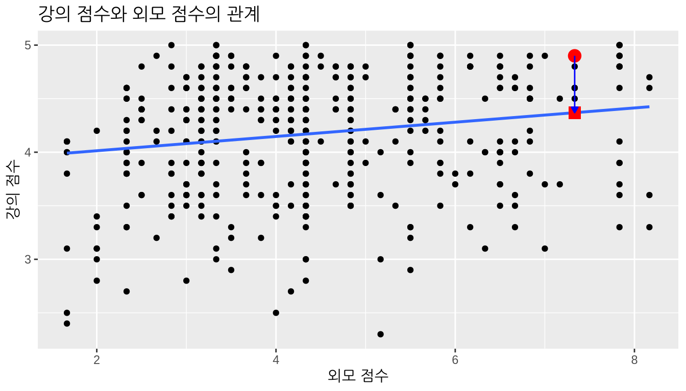
또한, 저장된 회귀 모델 score_model에 get_regression_points() 함수를 적용하여 \(n\) = 463개의 모든 잔차 계산을 자동화할 수 있습니다. residual 열의 결과값들이 대략 score - score_hat과 일치하는지 확인해 보십시오(반올림 오차로 인해 약간의 차이가 있을 수 있습니다).
# 회귀 모델 적합:
score_model <- lm(score ~ bty_avg, data = evals_ch5)
# 회귀 지점 가져오기:
regression_points <- get_regression_points(score_model)
regression_points# A tibble: 463 × 5
ID score bty_avg score_hat residual
<int> <dbl> <dbl> <dbl> <dbl>
1 1 4.7 5 4.21 0.486
2 2 4.1 5 4.21 -0.114
3 3 3.9 5 4.21 -0.314
4 4 4.8 5 4.21 0.586
5 5 4.6 3 4.08 0.52
6 6 4.3 3 4.08 0.22
7 7 2.8 3 4.08 -1.28
8 8 4.1 3.33 4.10 -0.002
9 9 3.4 3.33 4.10 -0.702
10 10 4.5 3.17 4.09 0.409
# ℹ 453 more rows잔차 분석은 조건 L, N, E를 검증하기 위해 사용되며, 적절한 데이터 시각화를 통해 수행할 수 있습니다. 더 정교한 통계적 접근 방식들도 존재하지만, 여기서는 플롯을 살펴보는 훨씬 간단한 방식에 집중하겠습니다.
12.3.2 관계의 선형성
첫 번째 조건은 결과 변수 \(y\)와 설명 변수 \(x\) 사이의 관계가 선형(Linear)이어야 한다는 것입니다. 설명 변수 \(x\)를 “외모” 점수로, 결과 변수 \(y\)를 강의 점수로 설정했던 그림 @ref(fig:regline)의 산점도를 상기해 봅시다. 여러분은 \(x\)와 \(y\) 사이의 관계가 선형이라고 하시겠습니까? 선 주위에 점들이 흩어져 있기 때문에 말하기가 조금 어렵습니다. 저자들의 의견으로는, 이 관계는 “충분히 선형적”이라고 느껴집니다.
그림 @ref(fig:non-linear)에서는 \(x\)와 \(y\) 사이의 관계가 명확하게 선형이 아닌 예를 제시합니다. 이 경우 점들은 명확하게 직선을 형성하지 않고 오히려 U자형 다항식 곡선을 형성합니다. 이런 경우 회귀 분석을 통한 추론의 어떤 결과도 유효하지 않을 것입니다.
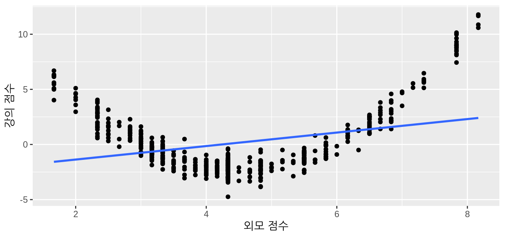
12.3.3 잔차의 독립성
두 번째 조건은 잔차들이 서로 독립(Independent)이어야 한다는 것입니다. 다시 말해, 우리 데이터의 서로 다른 관찰값들은 서로 독립적이어야 합니다.
우리 UT 오스틴 데이터의 경우, 463개 강의에 대한 데이터가 있지만, 이 463개 강의는 실제로는 94명의 서로 다른 강사들에 의해 진행되었습니다. 즉, 동일한 교수가 우리 데이터에 여러 번 포함되어 있는 경우가 많습니다. evals_ch5 데이터 프레임을 만드는 데 사용했던 원래의 evals 데이터 프레임에는 교수를 식별하기 위한 익명 아이디 변수인 prof_ID가 있습니다.
evals %>%
select(ID, prof_ID, score, bty_avg)# A tibble: 463 × 4
ID prof_ID score bty_avg
<int> <int> <dbl> <dbl>
1 1 1 4.7 5
2 2 1 4.1 5
3 3 1 3.9 5
4 4 1 4.8 5
5 5 2 4.6 3
6 6 2 4.3 3
7 7 2 2.8 3
8 8 3 4.1 3.33
9 9 3 3.4 3.33
10 10 4 4.5 3.17
# ℹ 453 more rows예를 들어, prof_ID가 1인 교수는 데이터의 처음 4개 강의를 가르쳤고, prof_ID가 2인 교수는 그다음 3개 강의를 가르치는 식입니다. 동일한 교수가 이 처음 4개 강의를 가르쳤다는 점을 고려하면, 이 4개의 강의 점수가 서로 관련이 있다고 생각하는 것이 타당합니다. 만약 어떤 교수가 한 수업에서 높은 score를 받는다면, 다른 수업에서도 높은 score를 받을 가능성이 꽤 큽니다. 따라서 이 데이터 세트는 463개 강의를 463명의 고유한 교수들이 가르쳤을 때와는 다른 정보를 제공합니다.
이런 경우, 관찰값 사이에 의존성(dependence)이 존재한다고 말합니다. 교수 1이 가르친 처음 4개 강의는 서로 의존적이고, 교수 2가 가르친 그다음 3개 강의도 서로 관련이 있는 식입니다. 이 데이터를 적절하게 분석하려면 우리가 동일한 교수들에 대해 반복 측정(repeated measures)을 했다는 사실을 반드시 고려해야 합니다.
따라서 이 사례에서는 독립성 조건이 충족되지 않습니다. 이것이 우리의 분석에 무엇을 의미할까요? 나머지 두 조건을 확인한 후, 다가올 하위 섹션 @ref(what-is-the-conclusion)에서 이 문제를 다루겠습니다.
12.3.4 잔차의 정규성
세 번째 조건은 잔차들이 정규(Normal) 분포를 따라야 한다는 것입니다. 또한, 이 분포의 중심은 0이어야 합니다. 즉, 때때로 회귀 모델은 양(+)의 오차(\(y - \widehat{y} > 0\))를 낼 수 있고, 또 어떤 때는 그에 상응하는 음(-)의 오차(\(y - \widehat{y} < 0\))를 낼 수 있습니다. 그러나 평균적으로 오차는 0이어야 하며, 그 모양은 종 모양과 비슷해야 합니다.
잔차의 정규성을 확인하는 가장 간단한 방법은 그림 @ref(fig:model1residualshist)에 시각화된 히스토그램을 살펴보는 것입니다.
ggplot(regression_points, aes(x = residual)) +
geom_histogram(binwidth = 0.25, color = "white") +
labs(x = "잔차")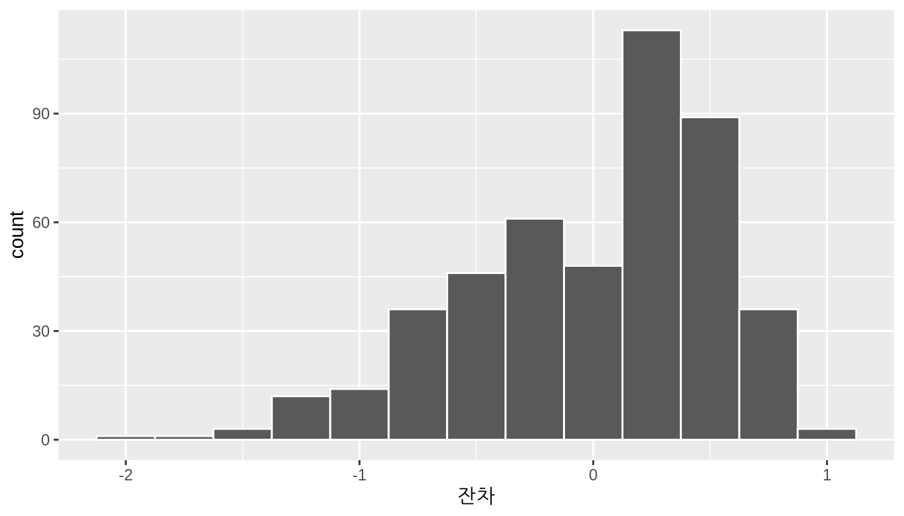
이 히스토그램은 음수 잔차보다 양수 잔차가 더 많음을 보여줍니다. \(y > \widehat{y}\)일 때 잔차 \(y-\widehat{y}\)가 양수이므로, 우리 회귀 모델의 적합된 강의 점수 \(\widehat{y}\)가 실제 강의 점수 \(y\)를 과소평가(underestimate)하는 경향이 있는 것 같습니다. 또한, 이 히스토그램은 왼쪽에 꼬리가 있다는 점에서 약간의 왼쪽으로 치우침(left-skew)을 보입니다. 이는 잔차들이 음의 왜도(negative skew)를 나타낸다고 말하는 또 다른 방법입니다.
이것이 문제일까요? 다시 말씀드리자면, 대답에는 어느 정도의 주관성이 개입됩니다. 저자들의 생각으로는, 잔차의 왜도가 약간 있기는 하지만 급격하지는 않다고 느껴집니다. 반면에 다른 사람들은 우리의 판단에 동의하지 않을 수도 있습니다.
그림 @ref(fig:normal-residuals)에서는 잔차가 정규 분포를 명확하게 따르는 예와 그렇지 않은 예를 제시합니다. 오른쪽에 있는 명확하게 비정규적인 잔차를 낳는 모델의 경우, 회귀 분석을 통한 추론의 어떤 결과도 유효하지 않을 것입니다.
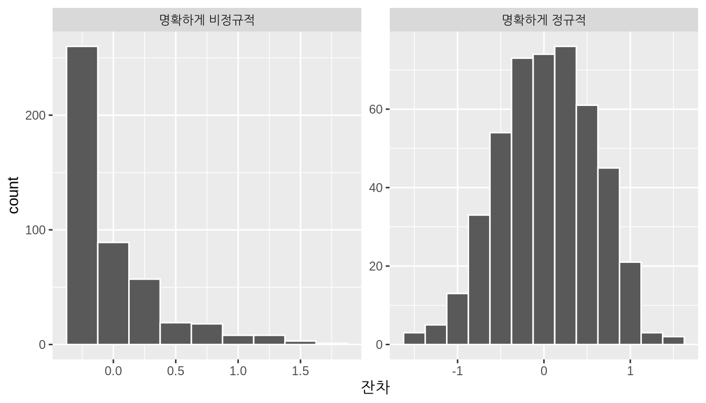
12.3.5 등분산성
네 번째이자 마지막 조건은 잔차들이 설명 변수 \(x\)의 모든 값에 대해 동일(Equal)한 분산을 가져야 한다는 것입니다. 다시 말해, 잔차의 값과 퍼짐 정도(spread)가 설명 변수 \(x\)의 값에 의존해서는 안 됩니다.
그림 @ref(fig:regline)의 산점도를 상기해 보십시오. x축에는 설명 변수 \(x\)인 “외모” 점수가, y축에는 결과 변수 \(y\)인 강의 점수가 있었습니다. 대신, 그림 @ref(fig:numxplot6)에서 보는 것처럼 x축은 동일한 값을 유지하되 y축에 잔차 \(y-\widehat{y}\)를 놓은 산점도를 만들어 보겠습니다.
ggplot(regression_points, aes(x = bty_avg, y = residual)) +
geom_point() +
labs(x = "외모 점수", y = "잔차") +
geom_hline(yintercept = 0, col = "blue", size = 1)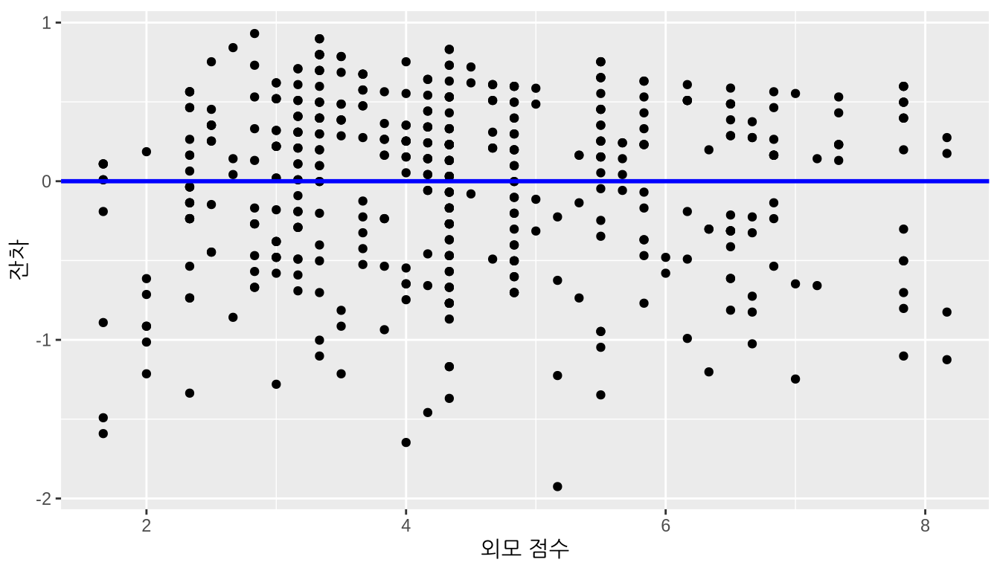
그림 @ref(fig:numxplot6)은 그림 @ref(fig:regline)의 회귀선이 포함된 플롯에서 회귀선을 \(y=0\)으로 평평하게 펴놓은 수정된 버전이라고 생각할 수 있습니다. 이 플롯을 볼 때, \(y=0\) 선 주위의 잔차들의 퍼짐 정도가 설명 변수 \(x\)인 “외모” 점수의 모든 값에 대해 일정하다고 하시겠습니까? 이 질문은 다분히 정성적이고 주관적인 성격을 띠기 때문에 사람마다 다른 대답을 내놓을 수 있습니다. 예를 들어, 어떤 사람들은 \(x\) 값이 작을 때가 클 때보다 잔차의 변동이 약간 더 크다고 말할 수 있습니다. 하지만 분산이 급격하게 일정하지 않은 것은 아니라고 주장할 수도 있습니다.
그림 @ref(fig:equal-variance-residuals)에서는 잔차의 분산이 설명 변수 \(x\)의 모든 값에 대해 명확하게 동일하지 않은 예를 제시합니다.
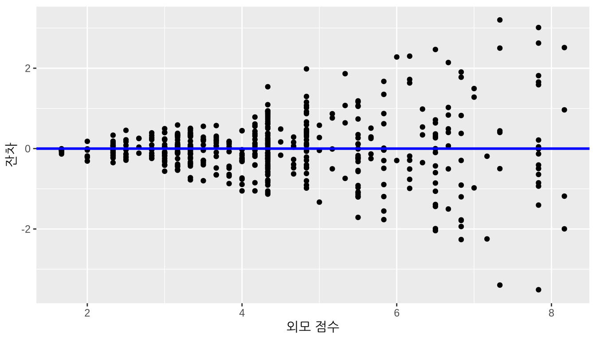
\(x\) 값이 커짐에 따라 잔차의 퍼짐 정도가 어떻게 증가하는지 관찰해 보십시오. 이러한 상황을 이분산성(heteroskedasticity)이라고 합니다. 잔차에서 이러한 패턴을 보이는 모델에 기반한 회귀 분석 추론의 결과는 유효하지 않을 것입니다.
12.3.6 결론이 무엇인가요?
회귀 분석을 위한 네 가지 조건을 다시 나열하고, 우리 분석에서 이 조건들이 충족되었는지 표시해 보겠습니다.
- 변수 사이 관계의 선형성(Linearity): 예
- 잔차의 독립성(Independence): 아니요
- 잔차의 정규성(Normality): 어느 정도
- 잔차 분산의 등분산성(Equality of variance): 예
그렇다면 이것이 섹션 @ref(regression-interp)에서 얻은 신뢰 구간과 가설 검정 결과에 어떤 의미가 있을까요?
첫째, 독립성(Independence) 조건입니다. evals_ch5 데이터의 서로 다른 행들 사이에 의존성이 존재한다는 사실은 반드시 해결되어야 합니다. 더 발전된 통계학 과정에서는 이러한 의존성을 회귀 모델에 어떻게 통합하는지 배우게 될 것입니다. 그러한 기술 중 하나가 계층형/다층 모델링(hierarchical/multilevel modeling)입니다.
둘째, 조건 L, N, E가 충족되지 않을 때는 종종 우리 모델에 결함이 있음을 의미합니다. 예를 들어, 우리가 “외모” 점수에서 했던 것처럼 단일 설명 변수만 사용하는 것이 불충분할 수 있습니다. 챕터 @ref(multiple-regression)에서 했던 것처럼 다중 회귀 모델에 더 많은 설명 변수를 포함하거나, 하나 이상의 변수를 변환하거나, 아예 다른 모델링 기술을 사용해야 할 수도 있습니다. 이러한 결함을 해결하는 방법에 대해 더 알고 싶다면, 더 발전된 회귀 모델링 방법에 대한 수업을 듣거나 관련 서적을 찾아보아야 합니다.
우리 사례에서 우리가 할 수 있는 최선은 신뢰 구간과 가설 검정이 제시하는 결과를 “예비적인(preliminary)” 것으로 보는 것입니다. 예비 분석은 강의 점수와 외모 점수 사이에 유의미한 관계가 있음을 시사하지만, 특히 네 가지 조건이 충족되도록 예비 모델 score ~ bty_avg를 개선하는 등의 추가 조사가 필요합니다. 네 가지 조건이 대략적으로 충족될 때, 우리는 신뢰 구간과 p-값에 더 큰 확신을 가질 수 있습니다.
회귀 문제에서 추론을 위한 조건은 신뢰 구간 구축과 가설 검정 수행 과정에서 매우 중요한 회귀 분석의 핵심 부분입니다. 하지만 실제 세상의 회귀 분석에서는 모든 조건이 완벽하게 충족되지 않는 경우가 많습니다. 또한 보셨다시피, L, N, E 조건을 확인하기 위한 잔차 분석에는 어느 정도 주관성이 개입됩니다. 그렇다면 무엇을 할 수 있을까요? 저자로서 우리는 모든 결과를 전달할 때 투명성을 가질 것을 권장합니다. 이를 통해 분석의 이해관계자들은 모델의 결함이나 모델이 “충분히 좋은지” 여부를 알 수 있습니다. 가정을 확인하는 과정이 다소 모호한 “상황에 따라 다르다”는 결과로 이어지기도 했지만, 저자들은 여러분이 앞으로 마주하게 될 어려운 통계적 결정을 내리는 데 도움을 주기 위해 이러한 시나리오들을 보여주기로 결정했습니다.
학습 확인
(LC10.1) age(나이)를 설명 변수로, 강의 score(점수)를 결과 변수로 사용하는 회귀 분석을 계속 진행해 봅시다.
get_regression_points()함수를 사용하여 463명의 모든 강사에 대한 관찰값, 적합값, 잔차를 구하십시오.- 잔차 분석을 수행하고 잔차에서 어떠한 체계적인 패턴이 있는지 찾아보십시오. 이상적으로는 패턴이 거의 없거나 아예 없어야 하지만, 여기서 발견한 내용에 대해 의견을 제시해 보십시오.
12.4 시뮬레이션 기반 회귀 분석 추론
하위 섹션 @ref(regression-table-computation)에서 회귀 표의 세 번째부터 일곱 번째 열을 해석할 때, R은 이러한 값을 계산하기 위해 시뮬레이션을 수행하지 않는다고 언급했습니다. 대신 R은 수학 공식을 포함하는 이론 기반 방법을 사용합니다.
이 섹션에서는 이전에 챕터 @ref(confidence-intervals)와 @ref(hypothesis-testing)에서 배운 시뮬레이션 기반 방법을 사용하여 표 @ref(tab:regtable-11)의 회귀 표에 있는 값들을 재현해 보겠습니다. 구체적으로 다음과 같이 infer 패키지 워크플로를 사용할 것입니다.
- 복원 추출 부트스트랩을 사용하여 모집단 기울기 \(\beta_1\)에 대한 95% 신뢰 구간을 구축합니다. 우리는 이전에
pennies데이터를 사용한 섹션 @ref(bootstrap-process)와mythbusters_yawn데이터를 사용한 섹션 @ref(case-study-two-prop-ci)에서 이 작업을 수행했습니다. - 순열 검정(permutation test)을 사용하여 \(H_0: \beta_1 = 0\) 대 \(H_A: \beta_1 \neq 0\)의 가설 검정을 수행합니다. 우리는 이전에
promotions데이터를 사용한 섹션 @ref(ht-infer)와movies_sampleIMDb 데이터를 사용한 섹션 @ref(ht-case-study)에서 이 작업을 수행했습니다.
12.4.1 기울기에 대한 신뢰 구간
하위 섹션 @ref(infer-workflow)에서 설명한 infer 워크플로를 사용하여 \(\beta_1\)에 대한 95% 신뢰 구간을 구축해 보겠습니다. 구체적으로, 먼저 463개 강의로 구성된 우리의 단일 표본을 사용하여 적합된 기울기 \(b_1\)에 대한 부트스트랩 분포를 구축할 것입니다.
score ~ bty_avg공식을 사용하여evals_ch5에서 관심 있는 변수들을specify()합니다.- 원래 463개 강의 표본에서 복원 추출을 통한
bootstrap리샘플링을 사용하여 복제본을generate()합니다.type = "bootstrap"을 사용하여reps = 1000개의 복제본을 생성합니다. - 관심 있는 요약 통계량인 적합된
slope\(b_1\)을calculate()합니다.
이 부트스트랩 분포를 사용하여 백분위수 방법과 (적절한 경우) 표준 오차 방법으로 95% 신뢰 구간을 구축할 것입니다. 이 사례에서 복원 추출 부트스트랩은 행 단위(row-by-row)로 수행된다는 점에 유의하는 것이 중요합니다. 따라서 score와 bty_avg 값의 원래 쌍은 항상 함께 유지되지만, 서로 다른 쌍들이 여러 번 리샘플링될 수 있습니다. 결과로 얻은 신뢰 구간은 UT 오스틴의 모든 교수에 대해 강의 점수와 “외모” 점수 사이의 관계를 정량화하는 알 수 없는 모집단 기울기 \(\beta_1\)의 타당한 값의 범위를 나타낼 것입니다.
먼저 적합된 기울기 \(b_1\)에 대한 부트스트랩 분포를 구축해 보겠습니다.
bootstrap_distn_slope <- evals_ch5 %>%
specify(formula = score ~ bty_avg) %>%
generate(reps = 1000, type = "bootstrap") %>%
calculate(stat = "slope")
bootstrap_distn_slope# A tibble: 1,000 × 2
replicate stat
<int> <dbl>
1 1 0.0651
2 2 0.0382
3 3 0.108
4 4 0.0667
5 5 0.0716
6 6 0.0855
7 7 0.0625
8 8 0.0413
9 9 0.0796
10 10 0.0761
# ℹ 990 more rowsstat 열에 1000개의 부트스트랩된 기울기 \(b_1\) 값이 있는 것을 확인해 보십시오. 그림 @ref(fig:bootstrap-distribution-slope)에서 1000개의 부트스트랩된 값들을 시각화해 보겠습니다.
visualize(bootstrap_distn_slope)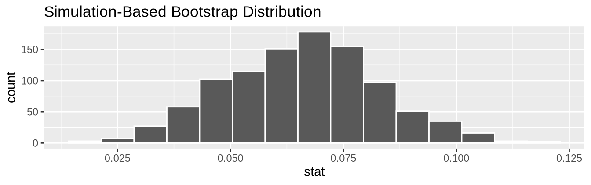
부트스트랩 분포가 대략 종 모양인 것을 확인해 보십시오. 하위 섹션 @ref(bootstrap-vs-sampling)에서 보았듯이, \(b_1\)의 부트스트랩 분포의 모양은 \(b_1\)의 표집 분포 모양과 매우 비슷합니다.
백분위수 방법
먼저, 백분위수 방법을 사용하여 \(\beta_1\)에 대한 95% 신뢰 구간을 계산해 보겠습니다. 중앙의 95% 값을 포함하는 2.5% 백분위수와 97.5% 백분위수를 찾아낼 것입니다. 이 방법은 부트스트랩 분포가 반드시 정규 분포를 따를 필요는 없다는 점을 상기하십시오.
percentile_ci <- bootstrap_distn_slope %>%
get_confidence_interval(type = "percentile", level = 0.95)
percentile_ci# A tibble: 1 × 2
lower_ci upper_ci
<dbl> <dbl>
1 0.0323 0.0990이에 따라 도출된 \(\beta_1\)에 대한 백분위수 기반 95% 신뢰 구간 (0.032, 0.099)은 회귀 표 @ref(tab:regtable-11)에 있는 신뢰 구간 (0.035, 0.099)과 유사합니다.
표준 오차 방법
그림 @ref(fig:bootstrap-distribution-slope)의 부트스트랩 분포가 대략 종 모양으로 보이므로, 표준 오차 방법을 사용하여 \(\beta_1\)에 대한 95% 신뢰 구간을 구축할 수도 있습니다.
이를 위해 먼저 표준 오차 기반 신뢰 구간의 중심 역할을 할 적합된 기울기 \(b_1\)을 계산해야 합니다. 회귀 표 @ref(tab:regtable-11)에서 이것이 \(b_1\) = 0.067임을 확인했지만, generate() 단계를 제외한 infer 파이프라인을 사용하여 계산할 수도 있습니다.
observed_slope <- evals %>%
specify(score ~ bty_avg) %>%
calculate(stat = "slope")
observed_slopeResponse: score (numeric)
Explanatory: bty_avg (numeric)
# A tibble: 1 × 1
stat
<dbl>
1 0.0666그런 다음 level = 0.95인 get_ci() 함수를 사용하여 \(\beta_1\)에 대한 95% 신뢰 구간을 계산합니다. point_estimate 인자를 observed_slope인 0.067로 설정하여 신뢰 구간의 중심을 정한다는 점에 유의하십시오.
se_ci <- bootstrap_distn_slope %>%
get_ci(level = 0.95, type = "se", point_estimate = observed_slope)
se_ci# A tibble: 1 × 2
lower_ci upper_ci
<dbl> <dbl>
1 0.0334 0.0999이에 따라 도출된 \(\beta_1\)에 대한 표준 오차 기반 95% 신뢰 구간 \((0.033, 0.1)\)은 회귀 표 @ref(tab:regtable-11)의 신뢰 구간 \((0.035, 0.099)\)과 약간 다릅니다.
세 가지 방법 비교
그림 @ref(fig:bootstrap-distribution-slope-CI)에서 세 가지 신뢰 구간을 비교해 보겠습니다. 백분위수 기반 신뢰 구간은 실선으로, 표준 오차 기반 신뢰 구간은 파란색 점선으로, 그리고 표 @ref(tab:regtable-11)의 회귀 표에서 얻은 이론 기반 신뢰 구간 (0.035, 0.099)은 검은색 점선(dotted)으로 표시되어 있습니다.
visualize(bootstrap_distn_slope) +
shade_confidence_interval(endpoints = percentile_ci, fill = NULL,
linetype = "solid", color = "grey90") +
shade_confidence_interval(endpoints = se_ci, fill = NULL,
linetype = "dashed", color = "grey60") +
shade_confidence_interval(endpoints = c(0.035, 0.099), fill = NULL,
linetype = "dotted", color = "black")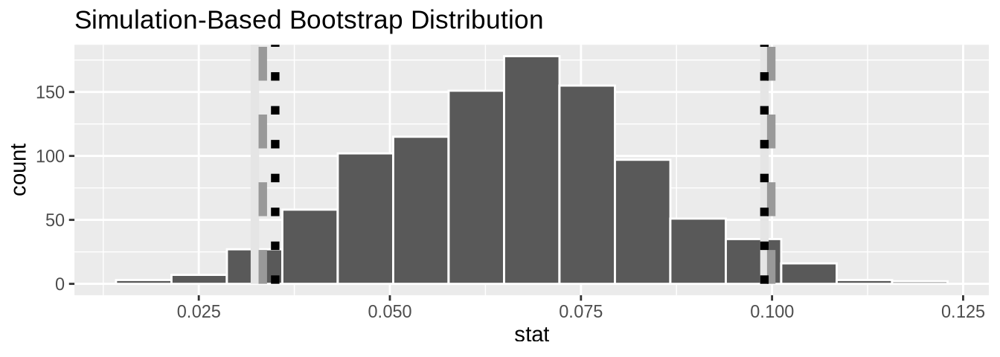
세 구간 모두 매우 유사하다는 것을 알 수 있습니다! 또한, \(\beta_1\)에 대한 세 신뢰 구간 중 어느 것도 0을 포함하지 않으며 모두 0보다 큰 곳에 위치합니다. 이는 실제 강의 점수와 “외모” 점수 사이에 유의미한 양(+)의 관계가 있음을 시사합니다.
12.4.2 기울기에 대한 가설 검정
이제 \(H_0: \beta_1 = 0\) 대 \(H_A: \beta_1 \neq 0\)의 가설 검정을 수행해 보겠습니다. 그림 @ref(fig:htdowney)의 “오직 하나의 검정만 존재한다” 다이어그램에 있는 가설 검정 패러다임을 따르는 infer 패키지를 사용할 것입니다.
먼저 귀무 가설 \(H_0\)에서 가정한 것처럼 \(\beta_1\)이 0이라는 것이 무엇을 의미하는지 생각해 봅시다. \(\beta_1 = 0\)이면 강의 점수와 “외모” 점수 사이에 아무런 관계가 없음을 의미한다고 언급했습니다. 따라서 이 특정한 귀무 가설 \(H_0\)를 가정한다는 것은 우리의 “가설된 우주”에서는 score와 bty_avg 사이에 아무런 관계가 없음을 의미합니다. 따라서 우리는 아무런 문제 없이 bty_avg 변수를 무작위로 섞거나(shuffle) 순열(permute)을 수행할 수 있습니다.
우리는 다음과 같은 단계들을 수행하여 적합된 기울기 \(b_1\)의 귀무 분포를 구축합니다. 용어, 표기법 및 정의와 관련된 섹션 @ref(understanding-ht)에서 귀무 분포(null distribution)를 귀무 가설 \(H_0\)가 참이라고 가정했을 때 우리 검정 통계량 \(b_1\)의 표집 분포로 정의했음을 상기하십시오.
score ~ bty_avg공식을 사용하여evals_ch5에서 관심 있는 변수들을specify()합니다.independence라는 귀무 가설을hypothesize()합니다. 섹션 @ref(ht-infer)에서 보았듯이, 이는 가설 검정을 위해 추가되어야 하는 단계입니다.- 원래 463개 강의 표본에서 값들을 순열/섞기를 수행하여 복제본을
generate()합니다. 여기서type = "permute"를 사용하여reps = 1000개의 복제본을 생성합니다. - 관심 있는 검정 통계량인 적합된
slope\(b_1\)을calculate()합니다.
이 경우, 우리는 1000번 동안 score 값들에 대해 bty_avg 값들의 순열을 수행합니다. 두 변수 사이에 아무런 관계가 없다는 “가설된 우주”를 가정했으므로 이러한 섞기/순열을 수행할 수 있습니다. 그런 다음 generate된 1000개의 표본 각각에 대해 "slope" 계수를 calculate 합니다.
null_distn_slope <- evals %>%
specify(score ~ bty_avg) %>%
hypothesize(null = "independence") %>%
generate(reps = 1000, type = "permute") %>%
calculate(stat = "slope")그림 @ref(fig:null-distribution-slope)에서 적합된 기울기 \(b_1\)에 대한 귀무 분포 결과를 확인해 보십시오.
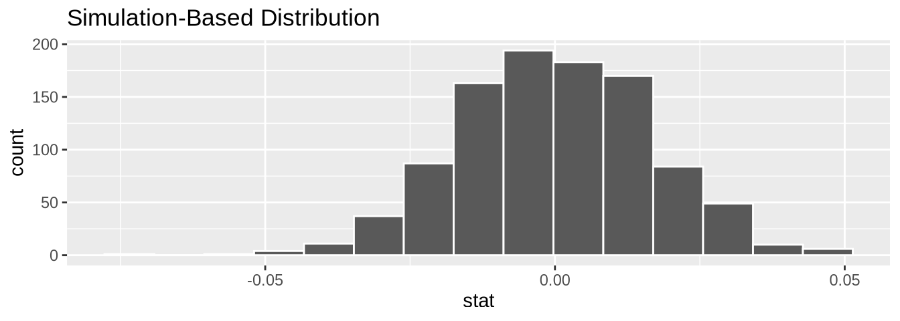
이 분포가 \(b_1 = 0\)을 중심으로 하고 있음에 주목하십시오. 이는 우리의 가설된 우주에서 score와 bty_avg 사이에 아무런 관계가 없으므로 \(\beta_1 = 0\)이라고 가정했기 때문입니다. 따라서 시뮬레이션을 통해 관찰되는 가장 전형적인 적합된 기울기 \(b_1\)은 0입니다. 또한 이 중심값 0을 중심으로 변동이 있음을 확인해 보십시오.
그림 @ref(fig:p-value-slope)에서 관찰된 검정 통계량 \(b_1\) = 0.067과 비교하여 귀무 분포의 p-값을 시각화해 보겠습니다. 이전의 visualize() 코드에 shade_p_value() 레이어를 추가하여 이를 수행할 것입니다.
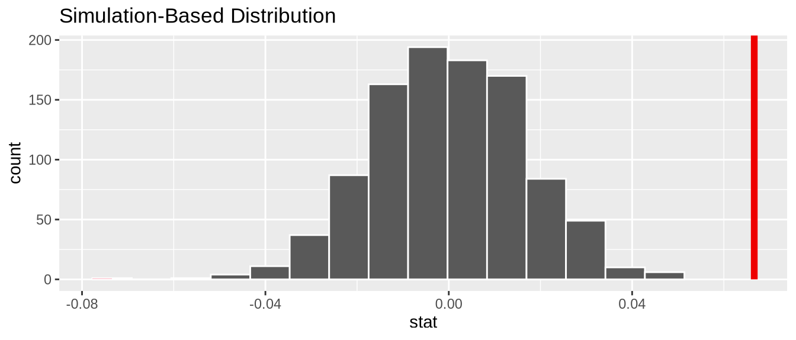
관찰된 적합 기울기 0.067이 이 귀무 분포의 오른쪽 끝에서 훨씬 멀리 떨어져 있고 색칠된 영역이 겹치지 않으므로, p-값은 0이 될 것입니다. 하지만 완결성을 위해 get_p_value() 함수를 사용하여 p-값의 수치를 계산해 보겠습니다. 이 함수는 shade_p_value() 함수와 동일한 입력을 받는다는 점을 상기하십시오.
null_distn_slope %>%
get_p_value(obs_stat = observed_slope, direction = "both")# A tibble: 1 × 1
p_value
<dbl>
1 0이는 표 @ref(tab:regtable-11)의 회귀 표에 있는 p-값 0과 일치합니다. 따라서 우리는 대립 가설 \(H_A: \beta_1 \neq 0\)을 지지하며 귀무 가설 \(H_0: \beta_1 = 0\)을 기각합니다. 즉, UT 오스틴의 모든 강사에 대해 강의 점수와 “외모” 점수 사이에 유의미한 관계가 있음을 시사하는 증거가 있습니다.
회귀 분석의 추론 조건이 충족되고 귀무 분포가 종 모양인 경우, 방금 보여드린 시뮬레이션 기반 결과와 표 @ref(tab:regtable-11)의 회귀 표에 표시된 이론 기반 결과 사이에 유사한 결과를 얻을 가능성이 높습니다.
학습 확인
(LC10.2) 이번에는 기울기 대신 상관 계수(correlation coefficient)에 대해 추론을 반복해 보십시오. infer 패키지의 calculate() 함수에서 stat = "correlation"을 구현하는 점에 유의하십시오.
12.5 결론
12.5.1 회귀에 대한 이론 기반 추론
하위 섹션 @ref(regression-table-computation)에서 표 @ref(tab:regtable-11)의 회귀 표를 해석할 때, R은 우리가 infer 패키지를 사용하여 챕터 @ref(confidence-intervals)와 @ref(hypothesis-testing)에서 했던 것처럼 신뢰 구간을 구축하고 가설 검정을 수행하기 위해 시뮬레이션 기반 방법을 사용하지 않는다고 언급했습니다. 대신 R은 하위 섹션 @ref(theory-ci)에서 본 이론 기반 신뢰 구간과 하위 섹션 @ref(theory-hypo)에서 본 이론 기반 가설 검정과 매우 유사하게 수학 공식을 사용하는 이론 기반 접근 방식을 사용합니다. 이러한 공식들은 컴퓨터가 존재하지 않던 시절에 유도되었으므로 대규모 시뮬레이션을 실행하는 것은 매우 노동 집약적인 일이었을 것입니다.
특히, 하위 섹션 @ref(theory-se)에서 본 표본 비율 \(\widehat{p}\)의 표준 오차 공식과 하위 섹션 @ref(theory-hypo)에서 본 표본 평균의 차이 \(\overline{x}_1 - \overline{x}_2\)의 표준 오차 공식과 마찬가지로, 적합된 기울기 \(b_1\)의 표준 오차를 구하는 공식이 있습니다.
\[\text{SE}_{b_1} = \dfrac{\dfrac{s_y}{s_x} \cdot \sqrt{1-r^2}}{\sqrt{n-2}}\]
이 공식에는 많은 것이 담겨 있으므로, 먼저 각 기호가 무엇을 나타내는지 분석해 보겠습니다. 먼저 \(s_x\)와 \(s_y\)는 각각 설명 변수 bty_avg와 결과 변수 score의 표본 표준 편차입니다. 둘째, \(r\)은 score와 bty_avg 사이의 표본 상관 계수입니다. 이는 챕터 @ref(regression)에서 0.187로 계산되었습니다. 마지막으로, \(n\)은 evals_ch5 데이터 프레임에 있는 점들의 쌍의 수로, 여기서는 463입니다.
이 공식을 말로 풀어서 설명하면, \(b_1\)의 표준 오차는 \(s_y / s_x\) 항에서 측정된 결과 변수의 변동성과 설명 변수의 변동성 사이의 관계에 달려 있습니다. 다음으로, \(\sqrt{1-r^2}\) 항에서 두 변수가 서로 어떻게 관련되어 있는지를 살펴봅니다.
하지만 앞의 공식에서 주목해야 할 가장 중요한 사실은 분모에 \(n - 2\)가 있다는 것입니다. 즉, 표본 크기 \(n\)이 증가할수록 표준 오차 \(\text{SE}_{b_1}\)은 감소합니다. 하위 섹션 @ref(moral-of-the-story)에서 \(n\) = 25, 50, 100개의 구멍이 있는 삽을 사용하여 시연했듯이, 적합된 기울기 \(b_1\)의 표집 변동량은 표본 크기 \(n\)에 따라 달라질 것입니다. 특히 표본 크기가 증가함에 따라 표집 분포와 부트스트랩 분포가 좁아지고 표준 오차 \(\text{SE}_{b_1}\)이 감소합니다. 따라서 실제 모집단 기울기 \(\beta_1\)에 대한 \(b_1\)의 추정치는 점점 더 정밀(precise)해집니다.
R은 회귀 표의 세 번째 열에서 \(b_1\)의 표준 오차를 구하기 위해 이 공식을 사용하며, 이어서 95% 신뢰 구간을 구축하는 데에도 사용합니다. 그렇다면 가설 검정은 어떨까요? 하위 섹션 @ref(theory-hypo)의 이론 기반 가설 검정에서와 마찬가지로 R은 가설 검정을 위한 검정 통계량으로 다음과 같은 \(t\)-통계량을 사용합니다.
\[ t = \dfrac{ b_1 - \beta_1}{ \text{SE}_{b_1}} \]
가설 검정 중에는 귀무 가설 \(H_0: \beta_1 = 0\)이 가정되므로 \(t\)-통계량은 다음과 같이 됩니다.
\[ t = \dfrac{ b_1 - 0}{ \text{SE}_{b_1}} = \dfrac{ b_1 }{ \text{SE}_{b_1}} \]
\(b_1\)과 \(\text{SE}_{b_1}\)의 값은 무엇일까요? 이들은 표 @ref(tab:regtable-11) 회귀 표의 estimate와 std_error 열에 있습니다. 따라서 표에 있는 4.09 값은 0.067/0.016 = 4.188로 계산됩니다. 여기에는 반올림 오차로 인해 약간의 차이가 있음에 유의하십시오.
마지막으로, p-값을 계산하려면 관찰된 검정 통계량 4.09을 적절한 귀무 분포와 비교해야 합니다. 섹션 @ref(understanding-ht)에서 귀무 분포는 귀무 가설 \(H_0\)가 참이라고 가정했을 때 검정 통계량의 표집 분포임을 상기하십시오. 하위 섹션 @ref(theory-hypo)의 이론 기반 가설 검정에서와 마찬가지로, 이 분포는 자유도가 \(df = n - 2 = 463 - 2 = 461\)인 \(t\)-분포임을 수학적으로 증명할 수 있습니다.
이 시점에서 약간 압도당하는 느낌이 들더라도 걱정하지 마십시오. 이론 기반 방법의 방정식을 완전히 이해하기 위해서는 이해해야 할 배경 이론이 많습니다. 하지만 신뢰 구간을 구축하고 가설 검정을 수행할 때 이론 기반 방법과 시뮬레이션 기반 방법은 종종 일관된 결과를 산출합니다. 앞서 언급했듯이, 저희의 의견으로는 이론 기반 방법보다 시뮬레이션 기반 방법이 갖는 두 가지 큰 장점은 (1) 통계적 추론을 처음 배우는 사람들이 이해하기 더 쉽고, (2) 이론 기반 방법과 수학 공식이 존재하지 않는 상황에서도 작동한다는 것입니다.
12.5.2 통계적 추론 요약
하위 섹션 @ref(sampling-conclusion-table)의 “추론을 위한 표집 시나리오” 표에서 마지막 두 시나리오를 마쳤으며, 이를 표 @ref(tab:table-ch11)에 다시 표시했습니다.
| Scenario | Population parameter | Notation | Point estimate | Symbol(s) |
|---|---|---|---|---|
| 1 | Population proportion | $p$ | Sample proportion | $\widehat{p}$ |
| 2 | Population mean | $\mu$ | Sample mean | $\overline{x}$ or $\widehat{\mu}$ |
| 3 | Difference in population proportions | $p_1 - p_2$ | Difference in sample proportions | $\widehat{p}_1 - \widehat{p}_2$ |
| 4 | Difference in population means | $\mu_1 - \mu_2$ | Difference in sample means | $\overline{x}_1 - \overline{x}_2$ or $\widehat{\mu}_1 - \widehat{\mu}_2$ |
| 5 | Population regression slope | $\beta_1$ | Fitted regression slope | $b_1$ or $\widehat{\beta}_1$ |
챕터 @ref(regression)와 @ref(multiple-regression)에서 배운 회귀 모델링 기술, 챕터 @ref(sampling)에서의 추론을 위한 표집에 대한 이해, 그리고 챕터 @ref(confidence-intervals)와 @ref(hypothesis-testing)의 신뢰 구간 및 가설 검정과 같은 통계적 추론 도구들을 갖춘 여러분은 이제 광범위한 데이터에서 변수 사이의 관계의 유의성을 연구할 준비가 되었습니다! 여기서 제시된 많은 아이디어는 다중 회귀 및 기타 더 발전된 모델링 기술로 확장될 수 있습니다.
12.5.3 추가 자료
이 장에서 사용된 모든 R 코드의 R 스크립트 파일은 여기에서 이용 가능합니다.
12.5.4 앞으로의 내용
이제 이 책의 마지막 주요 부분인 “infer를 이용한 통계적 추론”을 마쳤습니다. 마지막 챕터인 @ref(thinking-with-data)는 미국 워싱턴주 시애틀의 주택 가격과 같은 실제 데이터를 포함한 다양한 짧은 사례 연구들로 이 책을 마무리합니다. 이 책의 원칙들이 여러분이 데이터를 통해 훌륭한 스토리텔러가 되는 데 어떻게 도움이 되는지 확인하게 될 것입니다!